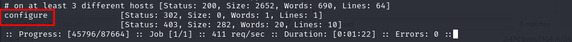
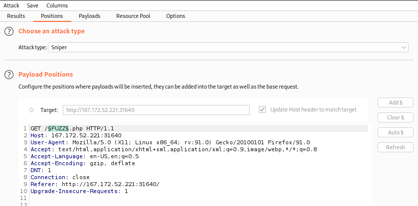

1. Fuzzing for PHP Files
Fuzzing for PHP Files
1. Search for PHP files
◇ Ffuf
$ ffuf -w /usr/share/seclists/Discovery/Web-Content/directory-list-2.3-small.txt:FUZZ -u http://<SERVER_IP>:<PORT>/FUZZ.php
If we are able to do Local File Inclusion (LFI) we are interested to these responses:
• 200 → OK
• 301 → Moved Permanently
• 302 → Found
• 403 → forbidden
Note: not interested to 404 (Not Found)
 ◇ Burp Intruder
2. Scan the PHP files found to find other endpoints. Scan also index.php that could give good hint
Wordlist:• dirs3arch:
https://github.com/puniaze/dirs3arch/tree/master/db/dirbuster ◇ small
https://raw.githubusercontent.com/puniaze/dirs3arch/master/db/dirbuster/directory-list-2.3-small.txt